Assignment 2 - Be Customer wise or otherwise
1. Introduction
In recent years, the prevalence of digital payments in the gambling industry has raised questions about how this technology may influence individuals’ gambling behaviours and its potential to contribute to harm. There is a research gap in terms of understanding how these digital payments might contribute to harm, and how they might provide opportunities for harm prevention.
2. Objectives
This analysis aims to explore whether subgroups of gamblers can be distinguished by analysing their payment activities in a gambling digital payments service provider. Specifically, it aims to discern whether cluster analysis of payments transaction data can reveal different types of gambling behaviours, profiles and highlight areas for harm prevention.
This will be achieved by the following steps:
proposing new variables from transaction data for customer segmentation
Applying clustering techniques to discover distinct customer profiles and behaviour
Identifying potential markers of harm for further research exploration
3. Data Preparation
A single dataset is used for this analysis, ‘Online_sports_DIB.csv’, which consists of 447,853 transaction records from 1st March 2019 to 29th February 2020. To be included in the sample, customers had to have made at least one deposit to their wagering account during the 1-year period.
An initial check of the dataset via SAS studio did not reveal any missing values.
Steps: In SAS Studio, Task> Prepare Data > Examine Data > Describe Missing Data
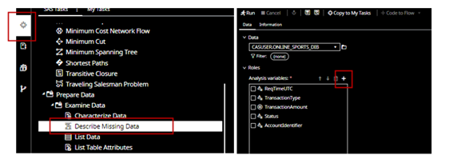
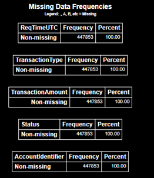
From SAS Visual Analytics, we note that there are 5,685 distinct Account identifiers.
Steps: In SAS Visual Analytics, Data> Move cursor to ‘Account Identifier’.
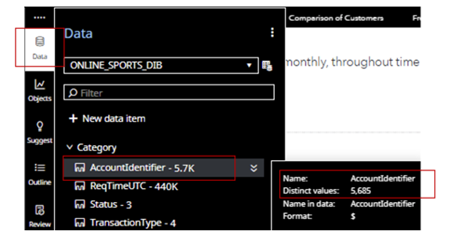
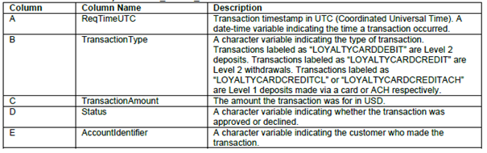
From Fig 3, we note that there are 4 transaction types, namely, ‘LOYALTYCARDDEBIT’,’LOYALTYCARDCREDIT’, ’LOYALTYCARDCREDITCL’ and ‘LOYALTYCARDCREDITACH’. These are transactions in and out of a customer’s digital wallet and are further classified as ‘Approved’ or ‘Declined’.
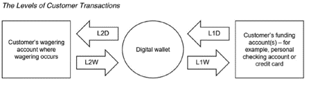
The following sub-sections highlight the major data-related issues and the steps taken to address them. The data preparation change log is detailed in the Appendix.
3.1 Removing clients with no deposits made to their wagering accounts
There are 77 accounts with no deposits made to their wagering accounts during the time period. These accounts will be removed. We use SQL code in SAS Studio to identify these accounts.
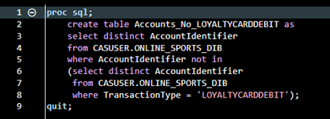
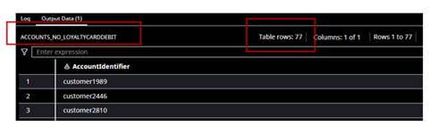
3.2 Converting timestamp to datetime and creating dates and time columns
The timestamp column in the transaction dataset was set with a varchar format.
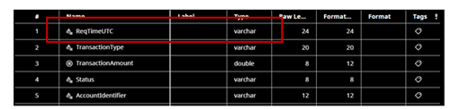
We convert the timestamp variable to a datetime format and rename the column ‘Timestamp’.
Steps:
In SAS Data Studio -Prepare Data > Column Transforms > Convert column > Conversion
In SAS Data Studio -Prepare Data > Column Tranforms > Rename column > Name of new column
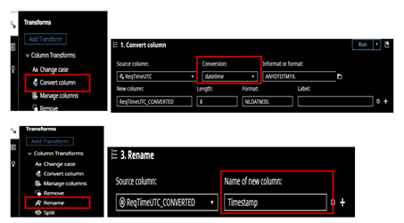
To further understand of the extent of transaction activities intraday, we decompose the timestamp to date and time.
Steps:
In SAS Data Studio -Prepare Data > Column Transforms > Convert column > Conversion (select date & time)
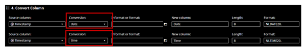
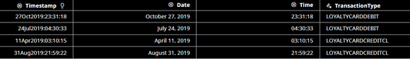
3.3 Filtering out transactions beyond the sample cut-off date
There are 3,268 transactions which were recorded beyond the sample date cut off of 29/02/2020. These were filtered out in SAS data studio-Prepare Data.
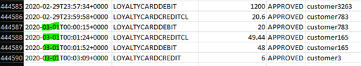
Steps:
In SAS Data Studio -Prepare Data > Row Transforms > Filter > column (TimeStamp), operator (less than), and value (1/3/2020)
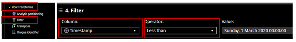
3.4 Filtering out transactions with N/A status
From SAS Visual Analytics, we noted that there are 6 transactions with ‘NA’ status. This will not bring any meaningful insight and will be filtered out.
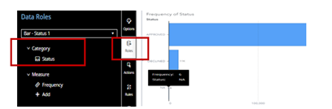
Steps:
In SAS Data Studio -Prepare Data > Row Transforms > Filter > column (Status), operator (Not Contains), and value (NA).
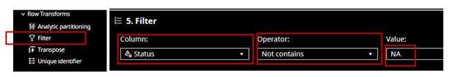
3.5 Removing Duplicates in data set
Using SQL code in SAS studio we noted that there are 4 duplicate entries in the dataset.
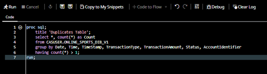
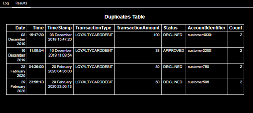
The duplicates were subsequently removed in SAS Data studio.
Steps: SAS Data Studio -Prepare Data > Data Quality Transforms > Remove Duplicates
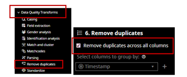
3.6 Renaming Transaction types
There are 4 transaction types, namely, ‘LOYALTYCARDDEBIT’,’LOYALTYCARDCREDIT’, ’LOYALTYCARDCREDITCL’ and ‘LOYALTYCARDCREDITACH’. We rename them to easily be able to infer the direction of funds. This is done through SQL code.
‘LOYALTYCARDDEBIT’ to ‘Deposit into Wager’
‘LOYALTYCARDCREDIT’ to ‘Withdrawal from Wager’
‘LOYALTYCARDCREDITCL’ to ‘Credit Line Deposit’
‘LOYALTYCARDCREDITACH’ to ‘Electronic Deposit’
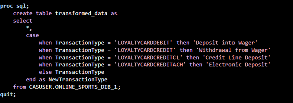
Fig 18: Renaming Transaction types by SQL code
3.7 Creating new categorical variables for date and time
Since transactions are recorded on an intraday basis, we re-categorize it into day type (weekday or weekend) and segments of the day (day, evening, and dawn) to help us analyse transaction patterns. This is done through SQL code.
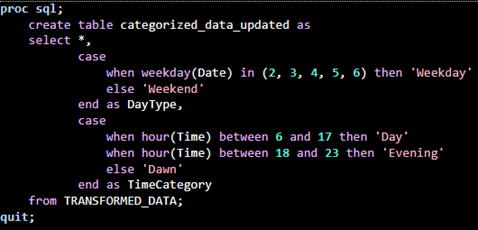
3.8 Creating new time variables for betting activity
To better understand when clients place their bets online, we create new variables using SQL code. From previously created categories of time, we sum the frequency counts of transactions. This is then grouped by bets placed during the day, night, dawn, weekday, and weekend. A new table ‘BetTimeCounts_Percentages’ will be created.
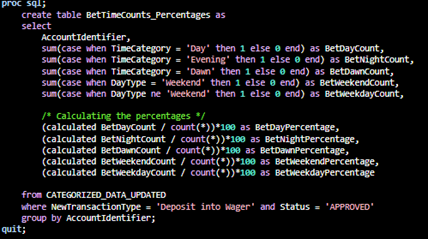
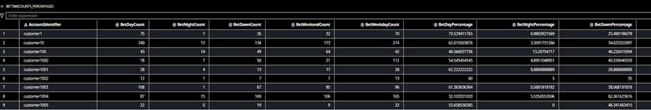
Assumption:
We assume that a successful deposit into the wagering account is a betting attempt i.e., an ‘Approved’ transaction type of ‘LOYALTYCARDDEBIT’.
3.9 Creating new variables to analyse the ‘Winning’ data of clients
To analyse if clients are actually winning from their betting activities. A new table ‘WinMetrics’ will be created using SQL code. This will include the frequency count of withdrawals from wager account, total winnings, and net winnings.
Assumption:
We assume that a successful withdrawal from the wagering account is a win from betting.
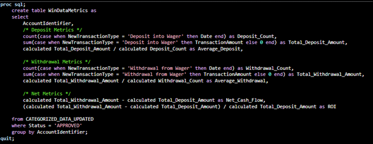
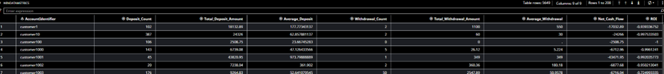
3.10 Capturing information on Declined transactions
There were 10,876 declined transactions, mainly made up of declined deposits to the digital wallet and declined deposits to wager accounts. It would be worthwhile to analyse which types of customers are getting declined, as this could be an indication of financial stress or over-gambling. A new table ‘DeclineData’ is created to capture the frequency counts of declined transactions.
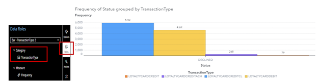
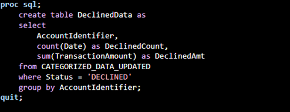
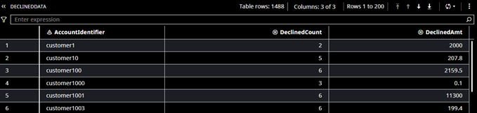
3.11 Creating new Recency, Frequency and Monetary variables and Merging tables
New recency, frequency, and monetary (RFM) variables (Fig 27) are created, using SQL code.
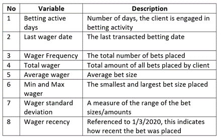
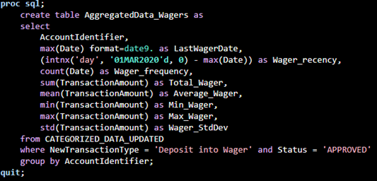
Lastly, we use the Join method in SQL code to merge all our tables to a combined dataset. This will be used for our subsequent clustering analysis. Our final dataset has 5575 distinct Account holders.
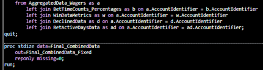
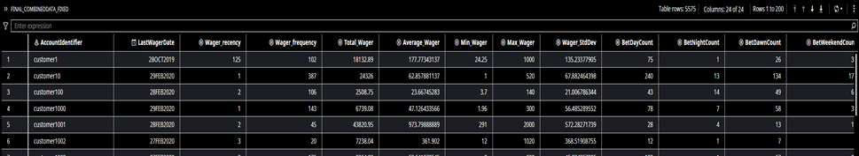
4. Cluster Analysis
In this section, we deep dive into the K-means clustering method. First, we perform univariate and bivariate analysis to examine the distribution and correlation of our variables.
4.1 Univariate Analysis
In SAS Visual Analytics, we populate the histograms of our variables. The following were observed:
Most variables are heavily skewed , meaning that transformation (e.g., log transform) would be required.
Some variables have some ‘0’ values because of the way they are calculated.
These values will be applied with a constant when doing log transformation as log of zero is undefined in real numbers.
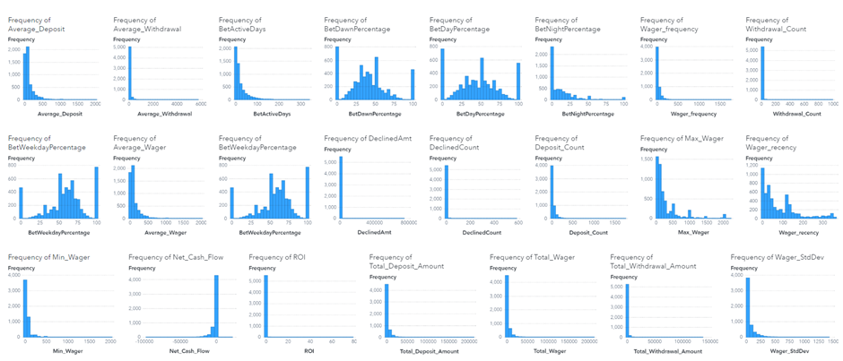
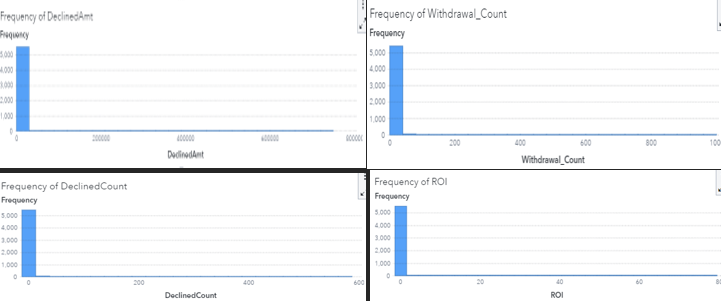
4 Variables, ‘DeclinedAmt’, Withdrawal_Count’, ‘DeclinedCount’ and ‘ROI’ will be dropped due to a high proportion of ‘0’ values
4.2 Bivariate Analysis
Next, we analyse the correlations between the remaining variables to check for variable pairs with strong correlation > 0.8.
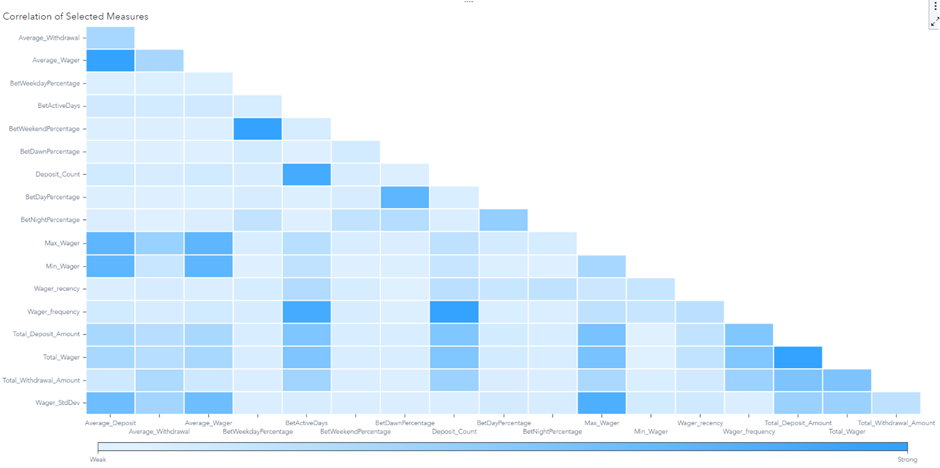
From the correlation matrix, the following 9 pairs of variables were observed to have a high correlation > 0.8 (Fig 34).
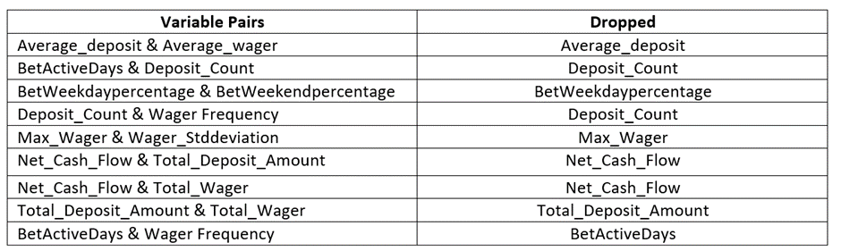
7 variables: ‘Average_deposit’, ‘Deposit_Count’, ‘BetWeekdaypercentage’, ‘Max_Wager’, ‘Net_Cash_Flow’ , ‘Total_Deposit_Amount’ and ‘BetActiveDays’ were dropped.
The remaining 12 variables were retained for our clustering analysis.
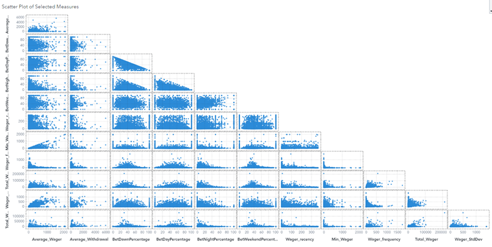
Fig 36 describes our 12 clustering variables.
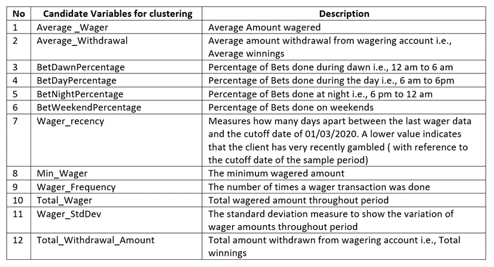
4.3 Log Transformation of Clustering variables
Most of our clustering variables are heavily skewed. We will do a log transformation to reduce the skewness. This is because K-means is highly sensitive to highly skewed data.
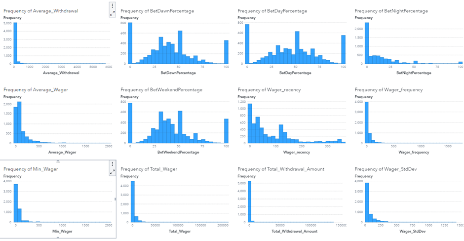
Next, we apply log transformation to transform highly skewed variables. As some variables have some ‘0’ values, we will need to apply a constant before doing a log transform.
Steps:
SAS Visual Analytics > Data > New Data Item> Calculated item > select variable > Operators > Numeric (simple)> x+y > Numeric (advanced) > Log > insert constant and log
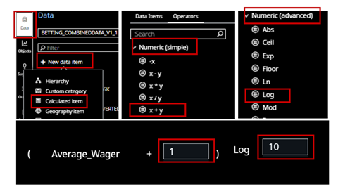
The results of our log transformation can be seen in Fig 38.
We conduct another correlation analysis to check if any of our correlations have changed. (Fig 39)
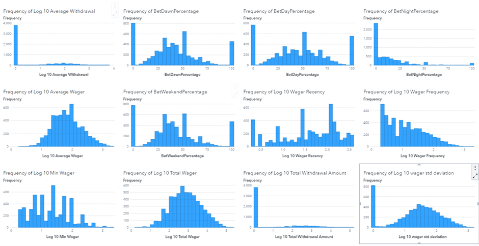
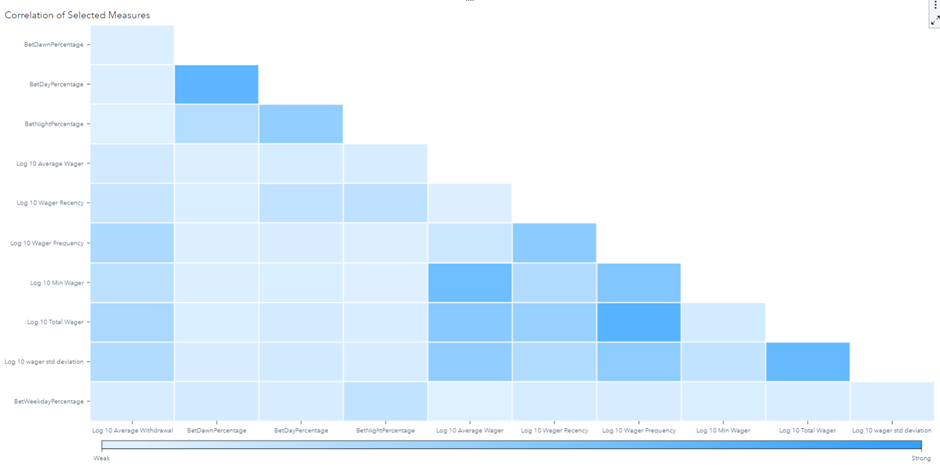
Upon checking, variable pair ‘Log 10 withdrawal’ & ‘Log 10 average withdrawal’ were found to have a high correlation of > 0.8. ‘Log 10 withdrawal’ was subsequently removed.
We retain the remaining 11 variables and proceed with our K-means clustering.
4.4 K-means clustering interation one (11 variables & 4 clusters)
Our first K-means iteration uses our finalized 11 clustering variables and 4 clusters.
Steps: SAS Visual Analytics > Objects > Statistics > Cluster
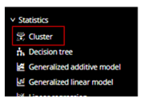
Steps: Options > Add clustering variables
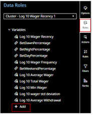
The number of clusters is automatically assigned by selecting the Automatic Aligned Box Criterion (ABC) function. We specify a range of 2 and 8 as the min and max number of clusters. Seed number is inputted as 1234 for reproducibility.
As we have log transformed variables, we apply ’None” under standardization.
Steps: SAS Visual Analytics > Options > Cluster
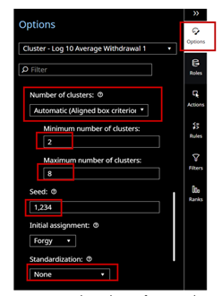
We also enable ‘ABC Statistics’ to evaluate the automatic assignment of cluster number.
Steps: SAS Visual Analytics, Options> Model Display > General >Select ABC Statistics
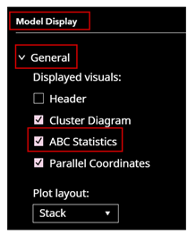
From the ABC Statistics graph(Fig 40), we analyse the Gap statistics further. We observe that the Gap statistic for 4 clusters (0.1003) is higher than that for 5 clusters (-0.0250) i.e., after 4 clusters, the Gap statistic starts to decrease, indicating diminishing returns in cluster quality or compactness.
This can typically be interpreted as the optimal number of clusters for the dataset.
As K-means is an unsupervised learning method, we will just use this auto-assignment as a start for our first clustering analysis. Subsequently, we will change the number of clusters to observe the difference in the quality of the clustering operation.

Cluster visualization
As can be seen from Fig 41, there is some overlapping among some clusters, which suggest that some data points might have similar attributes across clusters. Some clusters are larger in terms of their spread (width and height of the ellipses), indicating a higher variance within those clusters.
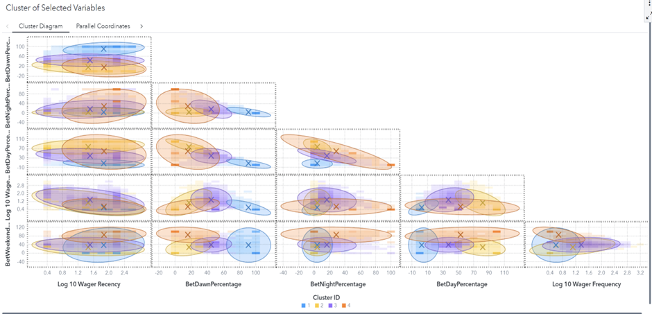
Cluster Summary Statistics
From the cluster summary (Fig 42) we observe the following:-
Cluster 3 has the majority of data points (2833) and has overlaps with all the other 3 clusters.
Cluster 2 is the most compact with the lowest RMS of STD.
Cluster 4, while having the fewest observations, is the most spread-out. As can be seen from its high RMS of STD.
Cluster 1 shows a moderate spread compared to other clusters
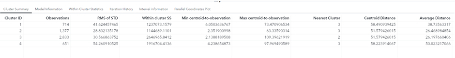
The parallel coordinate graphs (Fig 43 & 44) provide a way to visually inspect how each cluster differs across the different variables. Visually it is evident that the clusters differ across some variables but converge on others i.e., the similarities and dissimilarities between each cluster is quite even in proportion.
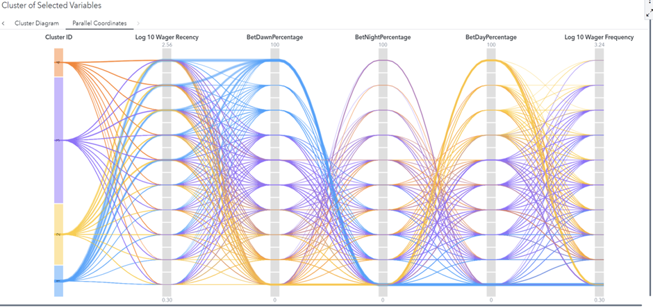
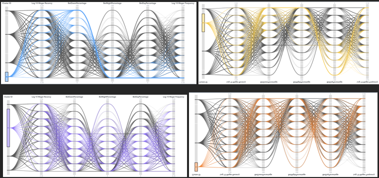
Next, we use the ‘derive cluster ID’ function in Visual Analytics to create a new categorical data role. This will enable us to analyse each cluster on an individual variable basis using bar charts on a separate page.
Steps: Cluster graph Options > Derive cluster ID items > define cluster id name
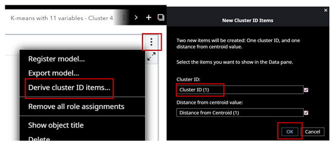
Fig 45: using the ‘Derive Cluster ID items’ function to create a new categorical data role
This new cluster ID will populate in Data roles. We can select this role to populate individual bar charts for each clustering variable (Fig 46).
Using the parallel plots of the 4 clusters (Fig 44), and bar charts of the clustering variables (fig 46), we summarize the ‘ranking’ of the 4 clusters in the table below(Fig 48).
Ranking for 1st to 4th is by order of magnitude. For wager recency, a ranking of 1st is equivalent to the most recent betting activity.
An explanation of the 4-cluster profiles and characteristics can be found in Appendix B.
4.5 K-means clustering Iteration two (11 variables & 6 clusters)
Next, we change the number of clusters to 6, to see if there is any difference in the quality of the clustering operation.
Steps: Options > General > Number of Clusters (input 6)
Cluster visualization
As can be seen from Fig 49, with the addition of 2 more clusters, there is more overlapping among the clusters, which suggest that adding more clusters may not have improved the distinctiveness between clusters.
However, this can only be confirmed after examining the characteristics of the clusters on an individual variable basis.
Cluster Summary Statistics
From the cluster summary (Fig 50) we observe the following:-
Cluster 1: Balanced size with 1,154 observations; nearest to Cluster 4.
Cluster 2: Smallest cluster at 263 observations; closest relationship with Cluster 3.
Cluster 3: Mid-sized (485 observations) with a moderate spread; leans towards Cluster 4.
Cluster 4: Largest cluster (2,716 observations) and most compact; central reference for Clusters 1 and 3.
Cluster 5: Most diverse with highest RMS STD (44.69); closest to Cluster 1.
Cluster 6: Mid-size with 440 observations; also has a tendency towards Cluster 1.
Similarly, we use the ‘derive cluster ID’ function to create a new categorical data role. This will enable us to analyse the characteristics of each cluster on an individual variable basis using bar charts on a separate page (Fig 52).
Using the parallel plots (Fig 51) and the bar charts (Fig 52), we summarize the ‘ranking’ of the 6 clusters in the table below (Fig 53).
Ranking for 1st to 6th is by order of magnitude. For wager recency, a ranking of 1st is equivalent to the most recent betting activity.
An explanation of the 6-cluster profiles and characteristics can be found in Appendix C.
4.6 K-means clustering Iteration three (9 variables & 5 clusters)
In the previous 2 iterations, we had used 11 clustering variables. From the previous collinearity matrix, there were 2 variable pairs of correlation close to 0.8 which were retained. Specifically, ‘BetDayPercentage’ & ‘BetDawnPercentage’, and ‘Log 10 Wager Frequency’ & ‘Log 10 Total Wager had correlations of above 0.75’.
In iteration 3, we drop 2 variables i.e., ‘BetDayPercentage’ and ‘Log 10 Total Wager’ to see if this improves our clustering operation. Similarly, the number of clusters (5) is derived from the Automatic Aligned Box Criterion (ABC) function in SAS visual Analytics (Fig 55).
Fig 54: The remaining 9 variables do not exceed 0.7 in terms of correlation
Cluster visualization
As can be seen from Fig 56, with the removal of 2 variables, there is more overlapping among the clusters compared to the previous 2 iterations. This suggest that this had reduced the distinctiveness between clusters. Cluster 3 is the ‘central’ cluster which captures most of the characteristics of other clusters.
Cluster 3 dominates with more than 50% of the observations and is the common cluster linking other clusters.
Fig 57: Cluster summary of the 5 clusters
The dominance of cluster 3 becomes more apparent as we examine the Parallel coordinates graph of the clusters (Fig 58). By selecting cluster 3 and dimming the others, we observe that cluster 3 occupies a large range of the percentile segments for each variable.
As a result, we will proceed to delve further into Iterations 1 & 2 instead for our next section.
5. Interpretation of Analyses
11 variable, 4-Cluster Model:
With only four clusters, each cluster captures a broader range of behaviours. For example, the “Dawn Predominant” group (Appendix B) captures those who bet primarily during the early hours. However, it doesn’t differentiate between those who also bet during the weekends versus those who don’t.
The markers of harm identified are relatively general, like disrupted sleep patterns for dawn bettors or habitual gambling for consistent high rollers. These can apply to a wider range of individuals within each cluster.
11 variable, 6-Cluster Model:
The 6 clusters allow for a more granular segmentation. We’ve separated those who bet during dawn from those who primarily bet over the weekends (Cluster 2 - “Dawn & Weekend Enthusiasts”) (Appendix C). This provides a more detailed view of the betting patterns.
With the increased granularity, the markers of harm can also be more tailored to the specific behaviours of each group. For instance, the “Night Owls” cluster in the 6-cluster model specifically highlights potential insomnia issues, something not explicitly mentioned in the 4-cluster model.
Discovery of New Behaviours: With the 6 clusters, the “Daytime Weekenders” cluster shows a group that prioritizes gambling during work breaks and weekends.
Conclusion:
The 6-cluster model seems to provide more granularity on distinct gambling behaviours in our dataset. It potentially offers a better chance of identifying nuanced patterns. If the aim is to have a more detailed and actionable segmentation, then the 6-cluster model appears more beneficial.
However, it’s also essential to ensure that the data supports these granular segments and that there’s enough differentiation between the clusters to justify the increased complexity. This will be explained in the next section.
6. Recommendations
During the process of data preparation, we encountered some ambiguity that could benefit from clarification or additional data.
a) Missing data for L1W, i.e. withdrawals from the digital wallet back to customer funding or credit line accounts (Fig 59).
It is not clear whether the digital wallet can be used as a payments tool for other transactions beyond betting. However, it is rational to think that winnings gained would usually be transferred back to funding and credit line accounts at some point.
Having this data would enable us to separate rational gamblers (win and take profits) and addicted gamblers(win but continue to bet more) more clearly.
b) Reason for ‘Declined’ transaction status
It is not clear whether transactions were declined due to system issues, lack of funds, lack of credit limit, or limits on betting volume.
Understanding the reason for declined transactions could further help identify clients undergoing financial stress or exhibiting excessive gambling exuberance.
c) Types and nature of Betting games
There is a clear distinction between very regular bettors and semi-frequent bettors. Besides attributing this to conservative gambling habits, the difference could also be explained by the type and nature of games played.
For example, regular bettors could be betting on frequently scheduled football matches, while non regular bettors could be betting on less frequently schedule boxing matches. Understanding the type and nature of the games played could help prevent misclassification of gambling profiles caused by the assumption that they are all playing the same game.
d) Demographics of clients
There is a clear distinction of gamblers (late night/dawn and daytime bettors). Besides attributing this to obsessive gambling habits, the difference could also be explained by the jobs held by these clients. For example, some clients could have different working hours (e.g., night shifts).
Understanding the age profiles of client could also benefit the analysis and help identify points of concern. For example, if there are many economically active young persons, it would be concerning that they are spending most of their leisure hours gambling.
Appendix
Data preparation Change log
4-Cluster Profile and Characteristics
- Cluster 1 (Dawn Predominant)
Profile:
High activity during dawn, with average wagering amounts and frequency.
Moderate wager recency indicates they bet not too distantly in the past.
Have the lowest minimum wager amount, suggesting some caution.
Possible Markers of Harm:
- The propensity to bet during dawn might indicate disrupted sleep patterns or prioritizing gambling over other morning activities.
- Cluster 2 (Consistent High Rollers)
Profile:
Highest average wager amounts and highest total wagered in the period.
Moderately recent betting activity and consistent frequency.
Bets are spread fairly evenly across the day, night, and weekends.
Possible Markers of Harm:
The consistently high amounts wagered could be indicative of potential gambling problems.
Regularity across different times might indicate dependency or habitual gambling.
- Cluster 3 (Frequent Bettors)
Profile:
Largest cluster indicating a significant segment of the gambler population.
High withdrawal amounts, most recent betting activity, and most frequent wagers.
Moderate betting amounts but leaning towards higher total wagers due to the frequency.
Possible Markers of Harm:
Frequent betting might indicate compulsive gambling behaviours.
The high withdrawal amount may signify dependency on winnings for daily expenses or immediate rewards.
- Cluster 4 (Night Enthusiasts)
Profile:
Smallest cluster in terms of population.
Predominantly active during nighttime with moderate average wagers.
Less recent betting activity, suggesting they don’t bet as frequently as others.
Possible Markers of Harm:
- Predominant night-time activity could suggest using gambling as an escape from daily stresses or other issues. A less frequent betting pattern might indicate periodic but intense gambling sessions.
6-cluster Profile and Characteristics
- Cluster 1 (High Rollers)
Profile:
These customers have the highest average wagers and also have high withdrawal amounts.
Their betting is consistent across different times of the day.
Possible Markers of Harm:
The consistently high amounts wagered might indicate potential gambling problems or financial distress.
Their constant betting behaviour, irrespective of the time, may indicate a lack of self-control or compulsive gambling tendencies.
- Cluster 2 (Dawn & Weekend Enthusiasts)
Profile:
- Predominantly active during early mornings and weekends with smaller wager amounts.
Possible Markers of Harm:
- Betting during unusual hours (early morning) may signify disrupted sleep patterns or prioritizing gambling over other essential activities.
- Cluster 3 (Steady Gamblers)
Profile:
A balanced approach to betting, with high average wagers and withdrawals.
Active both during the day and at night.
Possible Markers of Harm:
High withdrawal amounts might indicate dependency on winnings for daily expenses.
Constant activity during both day and night may indicate extended gambling sessions, leading to potential burnout or overspending.
- Cluster 4 (Frequent Bettors)
Profile:
Regular bettors with the highest number of wagers.
Their activity is prominent during the day.
Possible Markers of Harm:
The frequency of their bets might indicate compulsive betting behaviour.
Reliance on consistent withdrawals may point to financial dependency on gambling.
- Cluster 5 (Night Owls)
Profile:
- Predominantly active during nighttime with moderate wager amounts.
Possible Markers of Harm:
- Betting predominantly at night may point towards using gambling as an escape mechanism from daily stresses or potential insomnia issues.
- Cluster 6 (Daytime Weekenders)
Profile:
- Active during the day and weekends with good average wager and withdrawal amounts.
Possible Markers of Harm:
Regular betting during work breaks might indicate prioritizing gambling over work or other commitments.
Consistent weekend activity may show a lack of balance between leisure and betting.
Important Note:
SAS and all other SAS Institute Inc. product or service names are registered trademarks or trademarks of SAS Institute Inc. in the USA and other countries. ® indicates USA registration.
Other brand and product names are trademarks of their respective companies.